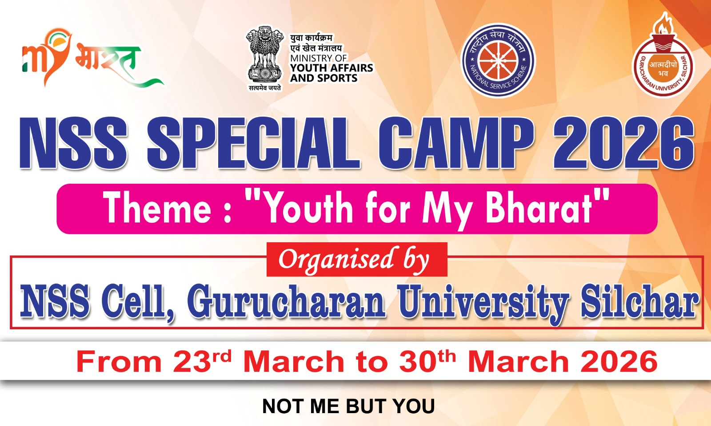
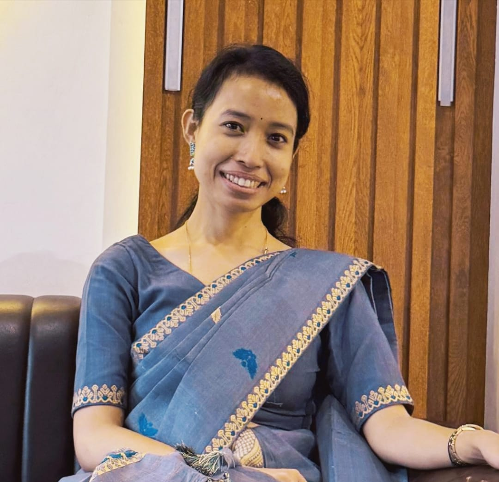
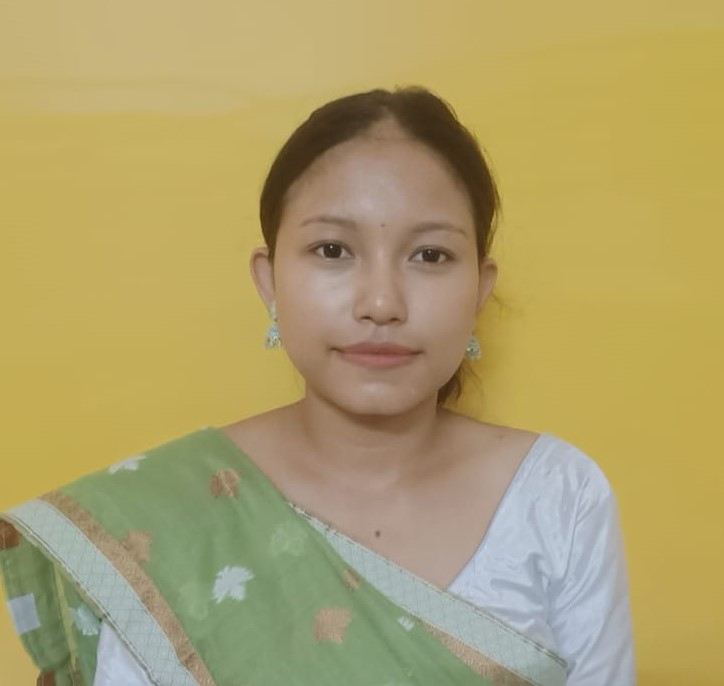
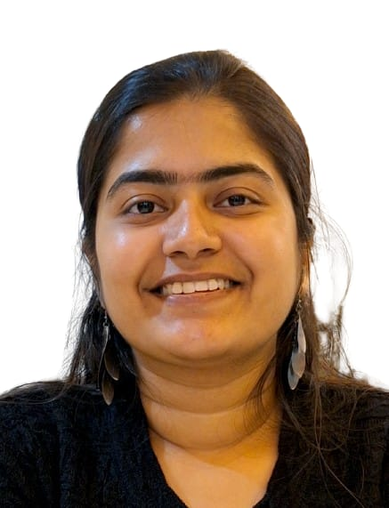
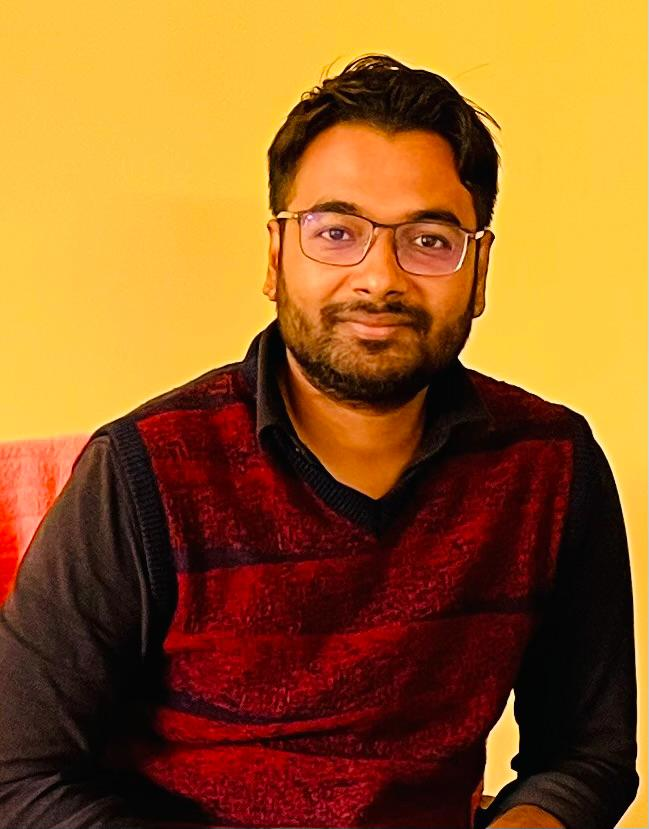
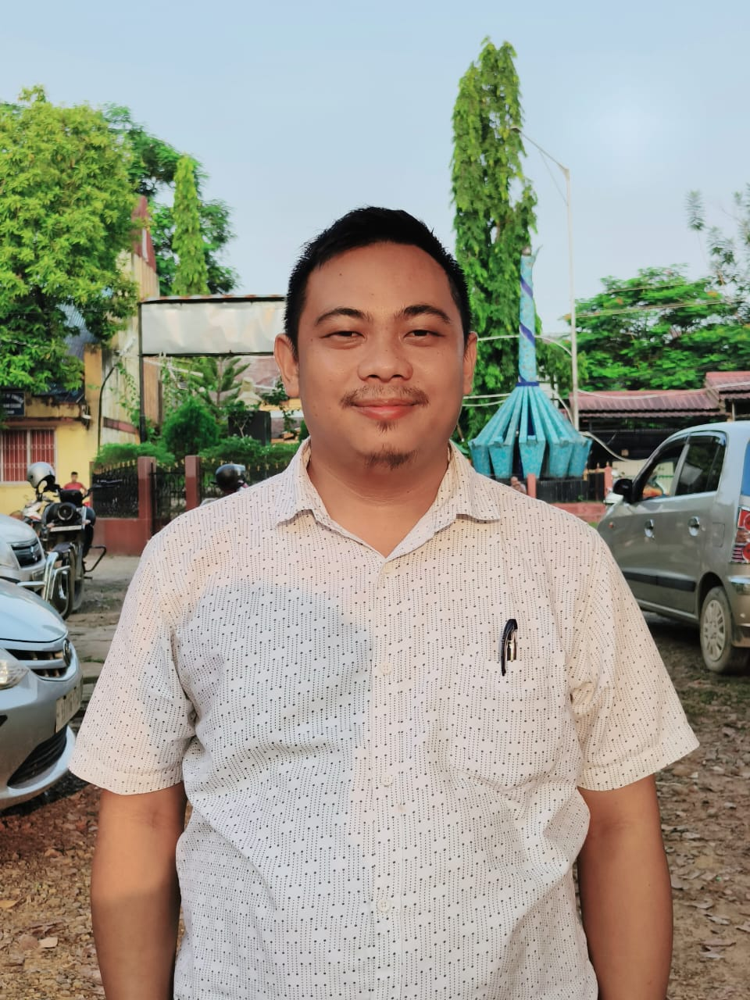

Features

NSS SPECIAL CAMP 2026
Every year, the NSS Cell of Gurucharan University, Silchar, conducts a one-week special camp. During this camp, we visit our adopted village, school, visiting orphanage and organize blood donation camps and other social service activities. The main aim of this event is to help people in need and contribute to the welfare of society. Guided by our Program Officer, our dedicated volunteers work together with enthusiasm, discipline, and a strong sense of responsibility. Inspired by the NSS motto,“Not Me But You”, we believe in selfless service and always strive to put the needs of others before our own. This special camp not only benefits the community but also helps volunteers develop leadership qualities, teamwork, social awareness, and compassion.
Published on: 23 March, 2026
Program Cordinator

Dr.Rajarshi Krishna Nath
Assistant Professer
Physics Department
Our Program Officers

Ms. Rimpi Sonowal
Assistant Professer
Program Officer of Sristy
English Department

Dr. Chandramita Boro
Assistant Professer
Program Officer in Barak Unit
Zoology Department

Ms. Bijoya Bardhan
Assistant Professer
Program Officer of Vikas Unit
Mathmatics Department

Dr. Abhijit Jaiswal
Assistant Professer
Program Officer of Rhino Unit
History Department

Dr. Bamonkiri Rongpi
Assistant Professer
Program Officer of Borail Unit
Anthropology Department
Explore More